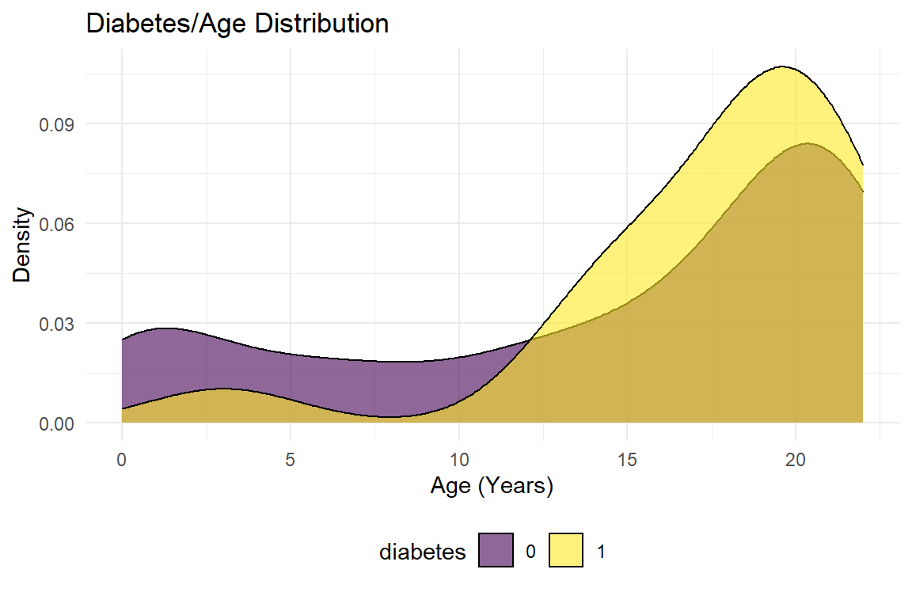
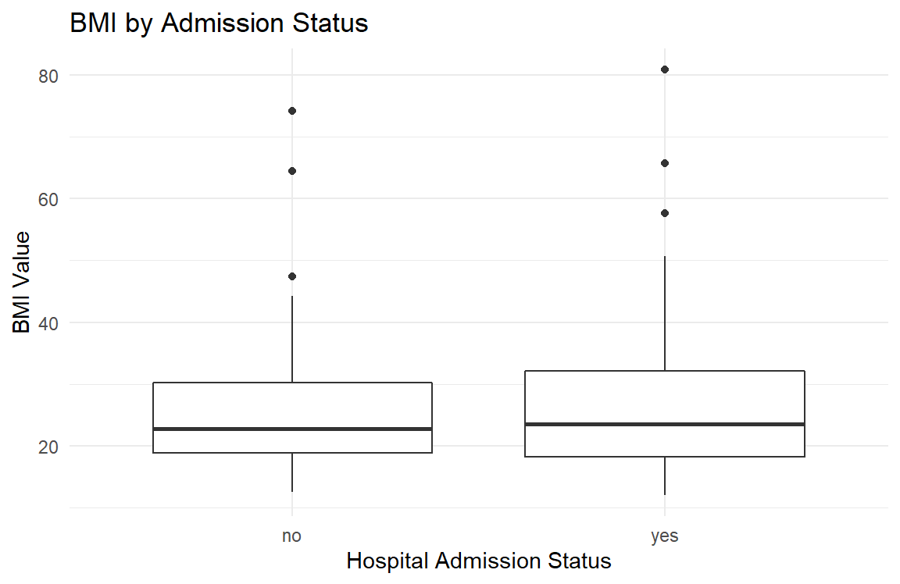
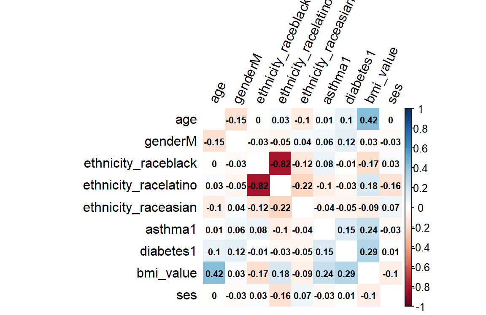

Exploratory Analysis
Our goal here is to develop a causation-type model instead of a prediction=targeted one. This is different than the interaction model tool, which was developed for predictive purposes. We will analyze correlations between admittance rate and multiple covariables and then develop a few select models to compare based on apriori knowledge and p-values. Another interesting variable that we would have liked to analyze was admittance to an ICU, but, as can be seen in the data summary, there were too few events of ICU admittance to draw any meaningful conclusions.
library(tidyverse)
library(patchwork)
library(corrplot)
library(mgcv)
library(modelr)
knitr::opts_chunk$set(
fig.width = 6,
fig.asp = 0.65,
out.width = "100%",
out.height = "75%")
theme_set(theme_minimal() + theme(legend.position = "bottom"))
options(
ggplot2.continuous.colour = "viridis",
ggplot2.continuous.fill = "viridis")
scale_colour_discrete = scale_color_viridis_d
scale_fill_discrete = scale_fill_viridis_d
knitr::opts_chunk$set(comment = NA, message = FALSE, warning = FALSE, echo = TRUE)Data
ped_covid =
read_csv("./data/p8105_final_ped_covid.csv") %>%
mutate(
ethnicity_race = case_when(
race == "R3 Black or African-American" ~ "black",
race == "R2 Asian" ~ "asian",
race == "R5 White" ~ "caucasian",
race == "R1 American Indian or Alaska Native" ~ "american indian",
race == "Multiple Selected" ~ "multiple",
ethnicity == "E1 Spanish/Hispanic/Latino" ~ "latino"
)
) %>%
mutate(
asthma = replace_na(asthma_dx, 0),
asthma = str_replace(asthma, ".*J.*", "1"),
diabetes = replace_na(diabetes_dx, 0),
diabetes = str_replace(diabetes, ".*E.*", "1"),
zip = as.character(zip_code_set),
service = outcomeadmission_admission_1inpatient_admit_service,
ed = ed_yes_no_0_365_before,
admission_dx = admission_apr_drg,
icu = icu_yes_no
) %>%
mutate(obesity = case_when(
bmi_value >= 30 ~ "1",
bmi_value < 30 ~"0"
))
zipcode_df =
usa::zipcodes
ped_covid =
left_join(ped_covid, zipcode_df, by = "zip") %>%
select(admitted, age, gender, ses, zip, eventdatetime, bmi_value, icu, icu_date_time,
systolic_bp_value, ethnicity_race, asthma, diabetes, zip, service, ed, admission_dx,
city.y, obesity, lat, long) %>%
mutate_at(c("admitted", "icu", "ethnicity_race", "asthma", "diabetes",
"ed", "city.y", "obesity"), as.factor) %>%
mutate(
gender = factor(gender, levels = c("F", "M")),
ethnicity_race = factor(ethnicity_race, levels = c("caucasian", "black", "latino", "asian"))
) %>%
rename(city = city.y)
summary(ped_covid) admitted age gender ses zip
no :250 Min. : 0.00 F :189 Min. :-13.506 Length:375
yes:125 1st Qu.:10.00 M :184 1st Qu.: -6.921 Class :character
Median :18.00 NA's: 2 Median : -4.122 Mode :character
Mean :14.63 Mean : -4.308
3rd Qu.:21.00 3rd Qu.: -2.112
Max. :22.00 Max. : 2.931
NA's :141
eventdatetime bmi_value icu icu_date_time
Length:375 Min. :12.03 0:355 Length:375
Class :character 1st Qu.:18.73 1: 20 Class :character
Mode :character Median :23.20 Mode :character
Mean :25.53
3rd Qu.:30.73
Max. :80.84
NA's :116
systolic_bp_value ethnicity_race asthma diabetes service ed
Min. : 61 caucasian: 18 0:314 0:358 Length:375 0:171
1st Qu.:103 black : 75 1: 61 1: 17 Class :character 1:204
Median :117 latino :189 Mode :character
Mean :116 asian : 8
3rd Qu.:128 NA's : 85
Max. :182
NA's :240
admission_dx city obesity lat
Length:375 Bronx :317 0 :187 Min. :40.58
Class :character Yonkers : 11 1 : 72 1st Qu.:40.83
Mode :character Mount Vernon: 7 NA's:116 Median :40.85
Brooklyn : 6 Mean :40.86
New York : 5 3rd Qu.:40.87
(Other) : 24 Max. :41.52
NA's : 5 NA's :5
long
Min. :-74.20
1st Qu.:-73.90
Median :-73.88
Mean :-73.88
3rd Qu.:-73.86
Max. :-73.67
NA's :5 Dataset exploration
This is a dataset of 375 pediatric patients 0 to 23 years of age with COVID-19 infection. First, we explore the data by generating various plots.
Age
There appears to be a bimodal distribution of hospital admission as a function of age. Among infants and toddlers less than 5 years of age who test positive for COVID-19, more are admitted than not admitted. Note that this could be due to babies being admitted along with their mothers’ who had COVID-19. After 16 years of age, hospitalizations for COVID-19 infection appear to be less than non-hospitalizations.
admitt_p =
ped_covid %>%
ggplot(aes(x = age, fill = admitted)) +
geom_density(alpha = .6) +
labs(
title = "Admittance/Age Distribution",
x = "Age (Years)",
y = "Density") +
theme(legend.position = "bottom")
admitt_p
Diabetes and Asthma
The distribution of diabetes, and asthma diagnoses in pediatric patients with COVID-19 infection by age are shown below. This is generally true for diabetes and asthma as well.
```r
diabetes_p =
ped_covid %>%
ggplot(aes(x = age, fill = diabetes)) +
geom_density(alpha = .6) +
labs(
title = "Diabetes/Age Distribution",
x = "Age (Years)",
y = "Density") +
theme(legend.position = "bottom")
diabetes_p
asthma_p =
ped_covid %>%
ggplot(aes(x = age, fill = asthma)) +
geom_density(alpha = .6) +
labs(
title = "Asthma/Age Distribution",
x = "Age (Years)",
y = "Density") +
theme(legend.position = "bottom")
asthma_pBox plots
Below, we explore first systolic blood pressure, BMI, and socioeconomic status (SES) by admission status. The median first systolic pressure is higher among admitted patients compared to non-admitted patients. BMI across admission status appears to be similar, with some high BMI outliers in the non-hospitalized group. Median SES is higher among admitted patients. The SES variable was defined by the hospital using multiple economic and educational parameters, with negative values indicating below average SES and positive values indicating above average SES.
bp_p =
ped_covid %>%
ggplot(aes(x = admitted, y = systolic_bp_value)) +
geom_boxplot() +
labs(
title = "Systolic Blood Pressure by Admission Status",
x = "Hospital Admission Status",
y = "Systolic Blood Pressure")
bp_p
bmi_p =
ped_covid %>%
ggplot(aes(x = admitted, y = bmi_value)) +
geom_boxplot() +
labs(
title = "BMI by Admission Status",
x = "Hospital Admission Status",
y = "BMI Value")
bmi_p
ses_p =
ped_covid %>%
ggplot(aes(x = admitted, y = ses)) +
geom_boxplot() +
labs(
title = "Socioeconomic Status by Admission Status",
x = "Hospital Admission Status",
y = "SES Measure")
ses_p
Note that we had categories for American Indian and Multiple/Mixed Race but there were too few counts for correlation significance purposes and were omitted for simplicity.
We can see from the correlation matrix that there is some positive correlation between age and BMI value (0.42), between BMI value and Asthma (0.24) ## Correlation Matrix with relevant covariates, and also between BMI value and diabetes (0.29)
cor_data =
cor(model.matrix(admitted ~ age + gender + ethnicity_race + asthma + diabetes + bmi_value + ses, ped_covid)[,-1])
cor_data %>%
corrplot(method = "color", addCoef.col = "black", tl.col = "black", tl.srt = 65, insig = "blank" , number.cex = 0.7, diag = FALSE)
Possible Models
When developing some of the models, we started by considering only categorical variables for simplicity along with the continuous variable of age. The ethnicity/race variable was the only non-binary categorical variables which we tried removing as you can see in the two model tables below. However, at the 5% level of significance, age and diabetes were still the only significant variables related to hospitalization.
Categorical-only (besides age) Model
race_mod =
glm(
admitted ~ age + gender + ethnicity_race + asthma + diabetes + obesity,
data = ped_covid,
family = binomial()
) %>%
broom::tidy() %>%
mutate(
OR = exp(estimate),
CI_lower = exp(estimate - 1.96 * std.error),
CI_upper = exp(estimate + 1.96 * std.error)
) %>%
select(term, OR, starts_with("CI"), p.value) %>%
knitr::kable(digits = 3)
race_mod| term | OR | CI_lower | CI_upper | p.value |
|---|---|---|---|---|
| (Intercept) | 5.101 | 1.134 | 22.939 | 0.034 |
| age | 0.938 | 0.897 | 0.981 | 0.005 |
| genderM | 0.728 | 0.409 | 1.295 | 0.280 |
| ethnicity_raceblack | 0.336 | 0.086 | 1.318 | 0.118 |
| ethnicity_racelatino | 0.344 | 0.092 | 1.286 | 0.113 |
| ethnicity_raceasian | 0.323 | 0.044 | 2.371 | 0.266 |
| asthma1 | 0.931 | 0.468 | 1.856 | 0.840 |
| diabetes1 | 3.764 | 1.100 | 12.880 | 0.035 |
| obesity1 | 2.166 | 1.070 | 4.384 | 0.032 |
Categorical-only Model (besides age) (Without Ethnicity/Race)
no_race_mod =
glm(
admitted ~ age + gender + asthma + diabetes + obesity,
data = ped_covid,
family = binomial()
) %>%
broom::tidy() %>%
mutate(
OR = exp(estimate),
CI_lower = exp(estimate - 1.96 * std.error),
CI_upper = exp(estimate + 1.96 * std.error)
) %>%
select(term, OR, starts_with("CI"), p.value) %>%
knitr::kable(digits = 3)
no_race_mod| term | OR | CI_lower | CI_upper | p.value |
|---|---|---|---|---|
| (Intercept) | 1.570 | 0.857 | 2.876 | 0.144 |
| age | 0.945 | 0.910 | 0.980 | 0.003 |
| genderM | 0.865 | 0.519 | 1.444 | 0.580 |
| asthma1 | 0.864 | 0.456 | 1.639 | 0.655 |
| diabetes1 | 5.119 | 1.574 | 16.651 | 0.007 |
| obesity1 | 1.812 | 0.964 | 3.403 | 0.065 |
We tried to include the continuous variables of BMI value and SES. Diabetes and BMI value were significant at the 5% level of significance, but age was insignificant.
Complex model containing all relevant variables
complex_mod =
glm(admitted ~ age + gender + ethnicity_race + asthma + diabetes + bmi_value + ses,
data = ped_covid,
family = binomial(link = "logit")
) %>%
broom::tidy() %>%
mutate(
OR = exp(estimate),
CI_lower = exp(estimate - 1.96 * std.error),
CI_upper = exp(estimate + 1.96 * std.error)
) %>%
select(term, OR, starts_with("CI"), p.value) %>%
knitr::kable(digits = 3)
complex_mod| term | OR | CI_lower | CI_upper | p.value |
|---|---|---|---|---|
| (Intercept) | 1.140 | 0.149 | 8.723 | 0.900 |
| age | 0.930 | 0.862 | 1.004 | 0.063 |
| genderM | 0.534 | 0.261 | 1.095 | 0.087 |
| ethnicity_raceblack | 0.549 | 0.110 | 2.733 | 0.464 |
| ethnicity_racelatino | 0.441 | 0.092 | 2.113 | 0.306 |
| ethnicity_raceasian | 0.246 | 0.017 | 3.623 | 0.307 |
| asthma1 | 0.959 | 0.439 | 2.095 | 0.916 |
| diabetes1 | 5.286 | 1.257 | 22.233 | 0.023 |
| bmi_value | 1.054 | 1.009 | 1.100 | 0.017 |
| ses | 0.990 | 0.873 | 1.123 | 0.876 |
We postulated that the reason age became insignificant because we did not consider its interactions with BMI and Asthma, which we saw were related to ### Complex model but with age interactions
age_int_mod =
glm(admitted ~ age + gender + ethnicity_race + asthma + diabetes + bmi_value + ses + age*bmi_value + age*asthma,
data = ped_covid,
family = binomial(link = "logit")
) %>%
broom::tidy() %>%
mutate(
OR = exp(estimate),
CI_lower = exp(estimate - 1.96 * std.error),
CI_upper = exp(estimate + 1.96 * std.error)
) %>%
select(term, OR, starts_with("CI"), p.value) %>%
knitr::kable(digits = 3)
age_int_mod| term | OR | CI_lower | CI_upper | p.value |
|---|---|---|---|---|
| (Intercept) | 15.954 | 0.329 | 774.203 | 0.162 |
| age | 0.800 | 0.654 | 0.979 | 0.030 |
| genderM | 0.564 | 0.271 | 1.170 | 0.124 |
| ethnicity_raceblack | 0.510 | 0.102 | 2.562 | 0.414 |
| ethnicity_racelatino | 0.425 | 0.087 | 2.065 | 0.289 |
| ethnicity_raceasian | 0.227 | 0.014 | 3.585 | 0.292 |
| asthma1 | 0.604 | 0.046 | 7.900 | 0.701 |
| diabetes1 | 5.708 | 1.347 | 24.188 | 0.018 |
| bmi_value | 0.931 | 0.787 | 1.101 | 0.405 |
| ses | 0.996 | 0.877 | 1.132 | 0.952 |
| age:bmi_value | 1.007 | 0.998 | 1.016 | 0.139 |
| age:asthma1 | 1.028 | 0.887 | 1.192 | 0.712 |
Complex Model with other interactions but age interactions
other_int_mod =
glm(admitted ~ age + gender + ethnicity_race + asthma + diabetes + bmi_value + ses + ses*bmi_value,
data = ped_covid,
family = binomial(link = "logit")
) %>%
broom::tidy() %>%
mutate(
OR = exp(estimate),
CI_lower = exp(estimate - 1.96 * std.error),
CI_upper = exp(estimate + 1.96 * std.error)
) %>%
select(term, OR, starts_with("CI"), p.value) %>%
knitr::kable(digits = 3)
other_int_mod| term | OR | CI_lower | CI_upper | p.value |
|---|---|---|---|---|
| (Intercept) | 1.154 | 0.065 | 20.525 | 0.922 |
| age | 0.930 | 0.862 | 1.004 | 0.064 |
| genderM | 0.535 | 0.261 | 1.095 | 0.087 |
| ethnicity_raceblack | 0.548 | 0.109 | 2.752 | 0.465 |
| ethnicity_racelatino | 0.440 | 0.092 | 2.116 | 0.306 |
| ethnicity_raceasian | 0.245 | 0.016 | 3.785 | 0.314 |
| asthma1 | 0.959 | 0.438 | 2.097 | 0.916 |
| diabetes1 | 5.292 | 1.244 | 22.503 | 0.024 |
| bmi_value | 1.053 | 0.966 | 1.149 | 0.242 |
| ses | 0.992 | 0.662 | 1.488 | 0.970 |
| bmi_value:ses | 1.000 | 0.986 | 1.014 | 0.990 |
Complex Model with all interactions
int_mod =
glm(admitted ~ age + gender + asthma + ethnicity_race + diabetes + bmi_value + ses + ses*bmi_value + age*asthma + age*bmi_value,
data = ped_covid,
family = binomial(link = "logit")
) %>%
broom::tidy() %>%
mutate(
OR = exp(estimate),
CI_lower = exp(estimate - 1.96 * std.error),
CI_upper = exp(estimate + 1.96 * std.error)
) %>%
select(term, OR, starts_with("CI"), p.value) %>%
knitr::kable(digits = 3)
int_mod| term | OR | CI_lower | CI_upper | p.value |
|---|---|---|---|---|
| (Intercept) | 15.456 | 0.195 | 1222.505 | 0.220 |
| age | 0.800 | 0.654 | 0.979 | 0.030 |
| genderM | 0.563 | 0.271 | 1.170 | 0.124 |
| asthma1 | 0.604 | 0.046 | 7.901 | 0.701 |
| ethnicity_raceblack | 0.511 | 0.101 | 2.593 | 0.418 |
| ethnicity_racelatino | 0.425 | 0.087 | 2.072 | 0.290 |
| ethnicity_raceasian | 0.229 | 0.014 | 3.790 | 0.303 |
| diabetes1 | 5.692 | 1.329 | 24.373 | 0.019 |
| bmi_value | 0.932 | 0.776 | 1.120 | 0.453 |
| ses | 0.990 | 0.656 | 1.495 | 0.962 |
| bmi_value:ses | 1.000 | 0.986 | 1.014 | 0.975 |
| age:asthma1 | 1.028 | 0.887 | 1.192 | 0.712 |
| age:bmi_value | 1.007 | 0.998 | 1.016 | 0.139 |